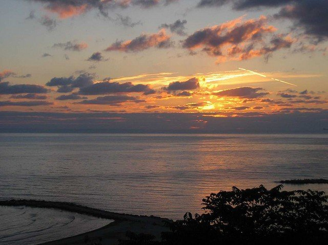

Чёрное мо́ре — внутреннее море бассейна Атлантического океана. Проливом Босфор соединяется с Мраморным морем, далее, через пролив Дарданеллы (эти проливы зачастую называют Черноморскими проливами) — с Эгейским и Средиземным морями. Керченским проливом соединяется с Азовским морем. С севера в море глубоко врезается Крымский полуостров. По поверхности Чёрного моря проходит водная граница между Европой и Азией.
Площадь Чёрного моря — 422 000 км² (по другим данным — 436 400 км²). Очертания Чёрного моря напоминают овал с наибольшей осью около 1150 км. Наибольшая протяжённость моря с севера на юг — 580 км; наибольшая глубина — 2210 м, средняя — 1240 м. Объём воды в море составляет 555 тыс. км³. Характерной особенностью Чёрного моря является полное отсутствие жизни на глубинах более 150—200 м из-за насыщенности глубинных слоёв воды сероводородом (там обитают лишь некоторые виды анаэробных бактерий).
Море омывает берега России, Украины, Румынии, Болгарии, Турции, Грузии, Абхазии (территории, расположенные вокруг моря, традиционно именуют термином «Причерноморье»).
Чёрное море — важный район транспортных перевозок. Помимо этого, Чёрное море сохраняет важное стратегическое и военное значение. В Севастополе и Новороссийске находятся основные военные базы Черноморского флота ВМФ России, в Синопе и Самсуне базируются корабли черноморской группировки ВМФ Турции, в Варне — ВМС Болгарии, в Поти и Батуми — корабельный состав департамента береговой охраны Пограничной полиции Грузии, в Констанце и Мангалии — ВМС Румынии. С марта 2014 года Военно-морские силы Украины находятся в Одессе.
Одним из наиболее ранних местных названий моря является древнегрузинское Сперское море (груз. ზღვა სპერისა [згва спериса]), которое происходит от имени одного из древних приморских народов Колхиды, саспиров (сасперов), и области их расселения — Испира (Спери). Древнегреческое название моря — Понт Аксинский (др.-греч. Πόντος Ἄξενος, «Негостеприимное море»), встречается и название «Скифское». В «Географии» Страбона (7.3.6) предполагается, что такое название море получило из-за трудностей с навигацией, а также диких враждебных племён, населявших его берега. Однако скорее всего греки восприняли местное скифское название моря, представлявшее рефлекс др.-иран. *axšaina — «тёмно-синий», «тёмный», соотносящееся с его нынешним названием, и переосмыслили его по созвучию с греческим словом «негостеприимный». Позднее, после удачного освоения берегов греческими колонистами, море стало называться Понтом Эвксинским (Πόντος Εὔξενος, «Гостеприимное море»). Впрочем, у Страбона (1.2.10) есть упоминания о том, что в античности Чёрное море называли и просто «морем» (πόντος). Анонимный персидский автор X века в книге «О границах земли»[en] (араб. حدود العالم, Hudud al-'Alam), составленной в 982—983 годах, в качестве наименования Чёрного моря пользуется синтагмой Горджи даря (Gorĵi darja, «Грузинское море»). Позже, в X—XIV веках, в древнерусских, арабских и западных источниках оно упоминается как «Русское море», что связано с его активным использованием мореплавателями из Руси. В «Повести временных лет» говорится «А Дънепрь вътечеть в Понтьское море трьми жерелы, еже море словеть Руськое…».
Итальянские мореходы из Венецианской и Генуэзской республик XIII—XIV вв называли Чёрное море «Великим морем» (лат. Mare Magnum, итал. Mare Maggiore, Mare Majus), одновременно применяя и название лат. Mare Nigrum.
У адыгов в древности море называлось адыг. Ахын, происходящее от хы — «море» и н — «источник», «родник». Также возможно возхождение топонима к наиболее древнему др.-иран. названию Ахшайна, которое на адыгских языках также означает «тёмный» (адыг. ахъшам). Современное название адыг. Хы ШӀуцӀ (Хи шуц — «Чёрное море»), вероятно, было перенято от турок.
Современное название «Чёрное море» было дано пришедшими сюда из Средней Азии кочевыми тюрками, назвавшими его «Кара Дениз». Оно нашло своё соответствующее отображение в большинстве языков: абх. Амшын Еиқәа, адыг. Хы шӏуцӏэ, кабард.-черк. Хы фӏыцӏэ, греч. Μαύρη θάλασσα, болг. Черно море, укр. Чорне море, груз. შავი ზღვა, рум. Marea Neagră, крымскотат. Qara deñiz, тур. Karadeniz (в противоположность Akdeniz «Белое море», под которым в Турции понимается Средиземное), англ. Black Sea и др.Существует целый ряд гипотез относительно причин возникновения такого названия:
Одна из гипотез связана с принятым в ряде азиатских стран «цветовым» обозначением сторон света, где «чёрный» обозначал север, соответственно Чёрное море — северное море. Другая гипотеза происхождения названия основывается на том, что металлические предметы (например, якоря), опущенные в воду моря глубже 150 м на длительное время, покрывались налётом чёрного цвета из-за воздействия сероводорода.